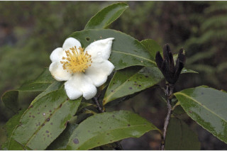
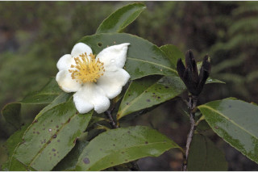
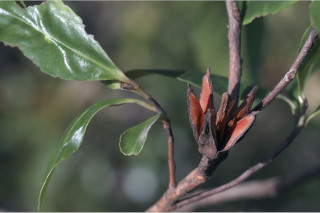
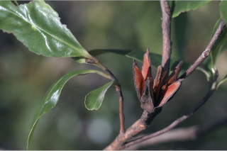

| Leaves : | Leaves simple , alternate , spiral ; petiole 0.2-1 cm long, planoconvex in cross section, glabrescent ; lamina 5-10.5 x 1.5-7 cm, elliptic to elliptic-oblong , apex obtuse or acute to shortly acuminate with retuse tip, base cuneate , margin serrate , pubescent when young at least on midrib beneath, coriaceous , dark green and shining above, pale beneath; midrib slightly canaliculate above; secondary_nerves 8-14 pairs, not raised, looped near margin; tertiary_nerves obscure or broadly reticulate if visible. |


 



 
